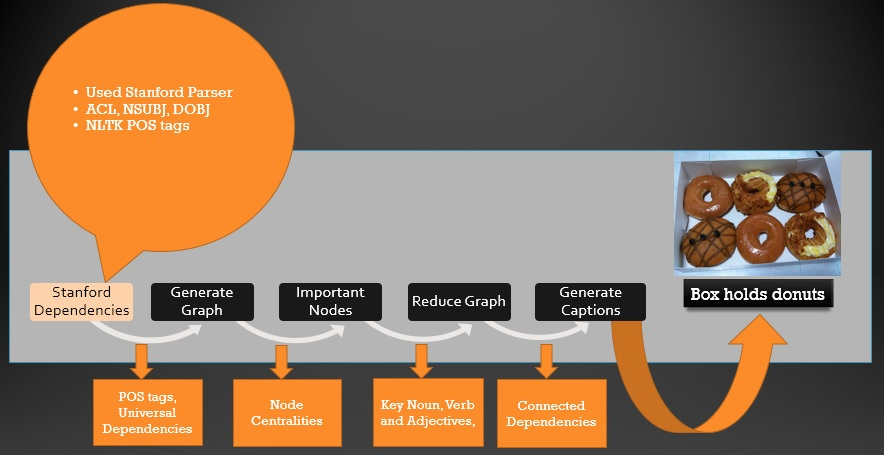

Technical Explanation:
In this project, we present a model to solve image captioning problem using semantic graphs from phrases that represents an image. The model is trained such that it captures only the critical words out of all the phrases that can be used to generate the captions. We worked on visual genome(Visual Genome, 2016) dataset for our region phrases that depict images present in COCO dataset(Microsoft coco captions, 2015) and calculate the error using standard BLEU metric measure. We used Simple-NLG to get the captions. We evaluated the captions generated by our model for 500 COCO images using the BLEU-1 metric.
Our approach to solve the problem of generating captions From descriptions is a two step approach. In the first step for a given image we generate a Graph for the given set of region descriptions of the image and then try to reduce this graph and extract important nodes and their relations(mod,dobj,nsubj) along with POS tags(later used to predict sentence). Now using these important nodes predict sentence which would be the caption. There are two different approach for this, first using SimpleNLG Sentence Generator to generate sentences using nodes, their relations (from Stanford Dependencies) and POS-tags (using NLTK tokenizer). Second approach is using Recurrent Neural Network based LSTM based model to train captions and nodes obtained and using this model to predict captions from the nodes of test data. We were not able to implement the 2nd approach efficiently and that remains a future task for us.
Model Workflow
This is the overall flow in our model.
Step 1: Stanford Dependencies
We found the POS tags and the universal dependencies using Stanford parser.
Step 2: Generate Graph
We started by generating a graph(G1) of the descriptions where nodes of graph are nouns, verbs and adjectives, we used nltk tokenizer for detecting this. Edges are obtained by feeding sentences to Stanford Parser one by one and then from the parsed dependencies we keep only those which have noun, verbs and adjectives. While adding nodes to the graph we used lemmetization technique to make sure that nodes are not duplicated with same context.
We also generated a graph(G2) using Stanford Parser Dependencies which contains relations on the edges of the Graph. Relations preserved are nsubj, dobj and acl. This graph is later used to feed POS tags and dependencies to SimpleNLG.
Step 3: Reduce Graph by finding important nodes using centrality
We ranked these nodes based on standard centrality measures such as eigen centrality, eigen Katz centrality, betweenness centrality, degree centrality and assoc space centrality. Here Assoc Space centrality takes care of the external knowledge as it is derived from ConceptNet graph matrix.
Various centrality were used to find important nodes.
We tried to learn the weights(w1,w2,w3,w4,w5) for these centralities so that we can predict nodes efficiently. We tried to maximize the node strength of important nodes (intuitively present in original captions). To achieve this task we defined a custom loss function and trained weights to achieve better accuracy by minimizing the loss function. After learning the weights we applied the same centrality measures to test data and extract important nodes based on these centrality measures.
Estimating weights
Reducing graph
Step 4: Generating Sentences
Considering top 20 Nodes based on centrality measures, the important task was to generate sentences using these nodes. We followed two different approaches to generate sentences. In the first approach we used SimpleNLG, we used graph G2 and important nodes from centrality measures to feed them as input to SimpleNLG sentence generator. SimpleNLG takes verb, object and subject as input and outputs the sentence. We are able to achieve some accuracy using this approach.
Sentence generation using simple NLG
Second approach was based on Neural Network LSTM based model where idea is to generate sentences using neural network where we feed the tuple of important nodes and the COCO captions in the training phase to an LSTM (Long Short Term Memory) Model and it will intuitively learn tuple
relation. After we train this model we create another model which takes in context the word em-
beddings and predict the sentence using the first LSTM model. We could not implement this efficiently.
Sentence generation using simple NLG
Results
Results of caption generation using simple NLG. The BLEU score we got was 0.07
We also show below the final weights learned.
Conclusion:
We experimented and learned various NLP and machine learning techniques throughout this project. We learned POS tagging and tokenizing using NLTK Tokenizer we got all the POS tags for words. We also learned lemmatization using TextBlob lemmatization to get word root before adding node to the graph so that multiple nodes are not inserted for one context. We extracted universal dependencies using Stanford Parser to find dobj, nsubj and acl relations between words that are used in sentence generation and generation of graph. We learned about centrality measures such eigen centrality, degree centrality, eigen-katz centrality and betweenness centrality to capture node potential in graph. To use external knowledge base we used Assoc Space Matrix centrality which is based on ConceptNet relations. We learned Word2Vec to train our own word2vec model and also worked on using pre-defined trained model as an experiment. We defined custom loss function to learn weights for all the centrality measures. We learned loss function optimization using scikit lmfit function to optimize weights based on our custom loss function minimization. To generate the sentences we learned Simple NLG which takes verb, subject and object as input and generates the template based sentences. We need to learn more on training LSTM model to generate captions from words. This is a future task for us.